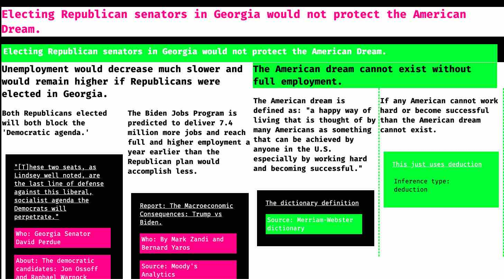

Cause Conscience
An experimental service for enabling conscientious commitment to causes
Georgia Senate Runoff

We are studying the decision that voters in Georgia will have to make between our two striving national causes: the Democrats and the Republicans. In our first visualization, we address the claim by Kelly Loeffler that electing Democrats would amount to the death of the American Dream. Our visualization entertains a claim that is related to hers. Our visualization shows how it's logic hangs together.
Using mouse and touch, it visualizes premises and causes. It also links to various evidence. It includes notes about the various premises. Eventually it should be a resource to anyone trying to efficiently and effectively entertain the different perpectives arising from different causes.
If you believe that we can in any way improve this, we invite you to reach out and help us improve this. Feel free to share evidence that we should also consider or that needs to be considered somewhere. Together we can make informed commitment to causes easier and more effective.
Feel free to send us a text or give us a call anytime. Especially if you want help. It's an experiment, so we may not always pick up right away or get back immediately. Don't feel like you can't call though. If we get too many calls that just means that we are working on the right thing and need to increase our ability to help people.
We are studying the decision that voters in Georgia will have to make between our two striving national causes: the Democrats and the Republicans. In our first visualization, we address the claim by Kelly Loeffler that electing Democrats would amount to the death of the American Dream. Our visualization entertains a claim that is related to hers. Our visualization shows how it's logic hangs together.
Using mouse and touch, it visualizes premises and causes. It also links to various evidence. It includes notes about the various premises. Eventually it should be a resource to anyone trying to efficiently and effectively entertain the different perpectives arising from different causes.
If you believe that we can in any way improve this, we invite you to reach out and help us improve this. Feel free to share evidence that we should also consider or that needs to be considered somewhere. Together we can make informed commitment to causes easier and more effective.
Feel free to send us a text or give us a call anytime. Especially if you want help. It's an experiment, so we may not always pick up right away or get back immediately. Don't feel like you can't call though. If we get too many calls that just means that we are working on the right thing and need to increase our ability to help people.